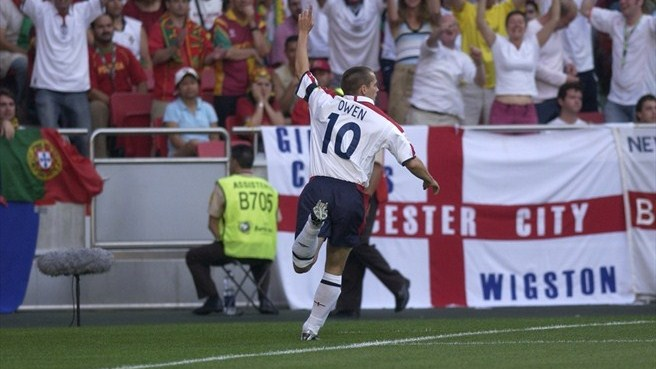

UEFA EURO 2016 competition format
Deschamps names France's home selection
France coach Didier Deschamps has sprung no surprises in picking his 23-man squad for their first home major tournament since he helped them win the 1998 FIFA World Cup.
(Read More)
Mila and Szukała out, Dawidowicz in for Poland
Sebastian Mila and Łukasz Szukała are the key absentees after Poland coach Adam Nawałka named a 28-man provisional squad for UEFA EURO 2016.
(Read More)
Ekdal doubt overshadows Sweden announcement
A freak injury to midfielder Albin Ekdal has left a major question mark hanging over Erik Hamrén's 23-man Sweden squad for UEFA EURO 2016.
(Read More)
Coleman names provisional Wales squad for EURO
Chris Coleman has named a 29-man squad for Wales' pre-UEFA EURO 2016 training camp in the Algarve, with Gareth Bale given special dispensation to delay his arrival.
(Read More)
recent Posts
popular Posts
Recent Comments
- #psd #newsletter | Download "Locus Newsletter" layout 1 PSD here: http://is.gd/gcrc2 - about 3 hours ago
- #pattern #notepad | Download 9 notepad patterns here: http://is.gd/gcr8s about 3 hours ago

UEFA European Football Championship origin
-
 21 Oct 2010
21 Oct 2010
-
 by admin
by admin
-
 12 Comments
12 Comments
-
 Permalink
Permalink
The UEFA European Championship is one of the world's biggest sporting events, although the competition's genesis was more difficult than might be expected.
Championships for national associations had already begun in other continents by the time the idea of a European competition for national teams began to reach fruition in the 1950s. At the time that UEFA was born, in 1954, the impetus for a European championship was coming from the distinguished French sports newspaper L'Equipe, which proposed a competition with home-and-away matches to be played in midweek in the evening.
Adding to the French drive for such a tournament was Henri Delaunay, first UEFA General Secretary and former French national association general secretary. In 1927, Delaunay had already submitted a proposal to FIFA, in conjunction with the great Austrian official Hugo Meisl, for the creation of a European cup, to run concurrently with the World Cup, which would involve a qualifying competition every two years.
The Henri Delaunay Cup
-
21 Oct 2010
-
by admin
-
12 Comments
-
Permalink
Spain's Iker Casillas had the pleasure of becoming the first captain to lift the updated version of the Henri Delaunay Cup in June 2008, with the new trophy a fitting replacement for the prize that had been synonymous with the UEFA European Championship.
The second version of the trophy is based on the original designed by the Arthus-Bertrand company in 1960 and named after Henri Delaunay, the former president of the French Football Federation (FFF) and UEFA's first general secretary, from the body's founding on 15 June 1954 to 9 November 1955.
It is 18cm higher and 2kg heavier than the original, made of sterling silver, and has retained its historical name. The trophy was reincarnated to reflect the scale and size of Europe's most prestigious international tournament.
video
Search
EURO's quickest goals

Dmitri Kirichenko celebrates after scoring the fastest goal in UEFA European Championship history
Russia's Sergei Aleinikov wasted no time in putting England to the sword in 1988 as he struck after 127 seconds
Petr Jiráček clips the Czech Republic ahead after 134 seconds of their UEFA EURO 2012 meeting with Greece
Alan Shearer scores England's goal against Germany during their EURO '96 semi-final, timed at 134 seconds

15 Comments
Michael Owen celebrates after scoring England's first goal during the UEFA EURO 2004 match against Portugal on 145 seconds